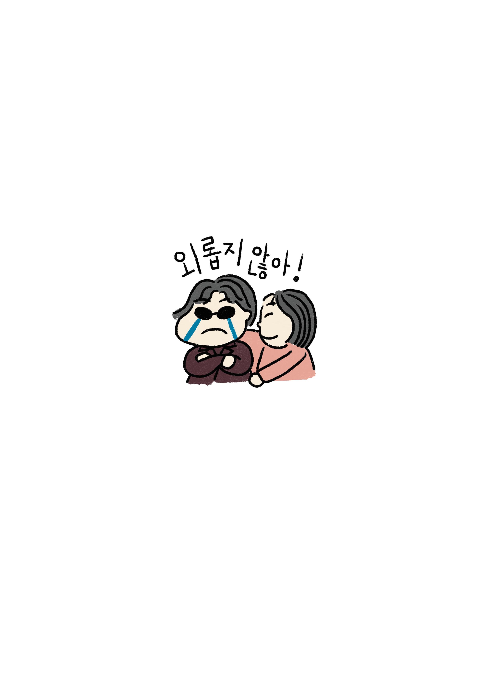

AM 01:50 - AM 03:45
-
엑시트 활동가 현주의 글
한동안 한 드라마에 푹 빠졌다.
유명한 작가의 작품으로 등장부터 주목을 받아 많은 사람들에게
사랑받았던 작품이다. 한창 ‘꼰대’라 불리는 나이 든 인물들이 나와
"끝나지 않았다. 여전히 살아있다”며 등장인물들 각자의 주체적인 삶을
보여준다. 그들 대부분은 ‘늙은이’, ’꼰대’로 불리는 것을 나름 쿨하게
인정하지만 그렇게 된 데에는 나름의 속 사정들이 있었음을 조명한다.
대중들에겐 가족에 대한 애틋함에 눈물짓게 하는 드라마로 자리 잡았다.
나는 방금 전 에피소드에 대한 나의 찝찝함에 대해 이야기하려 한다.
극 중 등장인물 ‘석균’은 본인만의 방식으로 자식을 챙긴다.
자식들 앞에서는 무뚝뚝하고 까칠하지만 그 뒤에서 아무도 모르게
자식들에게 해를 입힌 사람에게 앞뒤 가리지 않고 복수를 한다.
과거 석균의 맏딸 ‘순영’은 석균이 다니던 공장 아들에게 당한 성폭력
피해 사실을 알린다. 석균은 그런 이야길 꺼내는 순영 앞에서려 ‘그러게
왜 치마를 입고 돌아다니냐’며 오히려 소리쳐 타박을 줬다.
하지만 뒤에선 직장을 잃으면서 까지 그 가해자에게 폭력으로 응징한다.
그렇게 석균은 자식을 사랑하지만 표현을 잘 하지 못하는 전형적인
대한민국 아버지상을 보여주며 많은 사람들의 공감과 감동을 이끌었다.
나는 그의 남모를 희생과 사랑에 대한 스토리보다 맏딸 ‘순영‘의 마음에
집중이 됐다. 그러면서 이런 스토리가 훈훈하고 따듯한 마무리로
미화되는 게 난 싫었다. 실제로 맏딸 순영이의 상황이라면 지우지 못한
상처가 될 것이고 ’석균‘은 방관자일 뿐이다. 마지막 석균이 대한민국
아버지들이 그러하듯 딸에게 표현이 서툰 아버지라는 내용의
나레이션으로 마무리 되는데, 이런 식으로 순영의 상처는 수그러져야
하는 것인가? 하는 의문이 들면서 이것으로 ‘그래도 이들은 화목한
가정이지?’ 하는 강요의 메시지가 될 수 있겠다는 찝찝함이 들었다.
-
